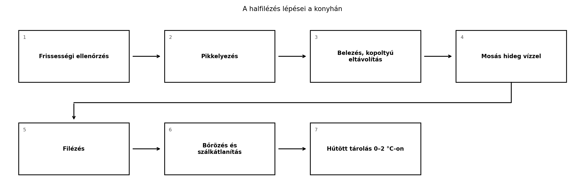

Az előkészítő műszakban egyszerre érkezhet egész csirke, friss ponty és előkészített vadhús is. Ha a baromfit rosszul bontod meg, a bőr felszakad, a töltött sütésnél szétnyílik a hús. Ha a halban szálka marad, a vendég panaszkodni fog. Ha a vadhúst nem a hűtőben pácolod, romlás vagy ételfertőzés lehet a vége. Ez az alfejezet a nyers baromfi, vad és hal biztonságos, szakszerű kézi előkészítését tanítja.
A hal előkészítése mindig szennyező művelet. A hal pikkelye, vére, belsősége tele van baktériummal, ezért a nyers halat soha nem készítheted ugyanazon a deszkán, ahol később salátát szeletelsz.

A folyamat két dolgot mutat: a technológiai sorrendet és azt, hogy a hal egyetlen percig sem állhat meleg helyen.
Definíció. A baromfibontás az egész baromfi testrészekre bontása, a csontozás a csontok eltávolítása, a töltésre előkészítés pedig olyan forma kialakítása, amelybe a tölteléket biztonságosan be lehet tenni és le lehet zárni.
Definíció. A halfilézés a hal két oldaláról a hús elválasztása a gerinctől és a bordacsontoktól. A bőrözés a filé bőrének eltávolítása, a szálkátlanítás a húsban maradt izomközi szálkák kihúzása.
Definíció. A vadhús pácolása olyan hideg, ízesített folyadékban történő érlelés, amely lágyítja és ízesíti a sötét, sűrű rostú vadhúst.
Higiénia. A nyers állati eredetű anyagok (baromfi, vad, hal, kagyló) előkészítése erősen szennyező művelet. Dolgozz külön vágódeszkán, külön késsel, és a művelet után azonnal mosd el az eszközöket forró, mosogatószeres vízzel. A nyers baromfit tartalmazó edény alá soha ne tégy készételt. Az előkészített húst azonnal fedd le és tedd hűtőbe.
A baromfi előkészítését mindig a frissesség ellenőrzésével kezdd. A bőr legyen ép, száraz, rugalmas, az illata semleges, a hús ne legyen nyálkás. A fagyasztott baromfit hűtőben, hideg folyóvíz alatt vagy mikrohullámú készülékben olvaszd; a szobahőmérsékleten történő olvasztás tilos.
Tilos. Nyers baromfit nem mosunk folyó víz alatt. A fröccsenő vízcseppek a Campylobacter és Salmonella baktériumot szétszórhatják a konyhában. Ha szükséges, papírtörlővel itasd le a húst.
A házilag vágott vagy piacon vásárolt baromfi bőrén tollcsökevény, pihe maradhat. A perzselés során a baromfit gázláng fölött körbeforgatod, hogy a maradék pihe leégjen. Ezután a leégett pihét száraz vagy enyhén nedves papírtörlővel töröld le, és a papírt azonnal dobd ki; a baromfit vízzel nem mossuk. Biztonsági korlát. Perzselést csak tankonyhán vagy biztonságos elszívó alatt, oktatói felügyelettel végezz; ne tartsd a baromfit túl közel a lánghoz, és legyen kéznél oltóeszköz.
Az alábbi lépéseket egész csirkén mutatjuk be. A kacsa, liba, pulyka bontása ugyanezen elv szerint történik, de a nagyobb testrészek erősebb csontozást igényelnek.
Eljárás. Egész csirke bontása:
Az ábra hat képe a fenti hat lépést mutatja felülnézetben: a szaggatott vonal a vágás helye, a pontozott rész az adott lépésben leváló darab, a szürke a már levált rész. Figyeld meg, hogy minden vágás ízületnél (comb-, térd-, vállízület) vagy csont mentén (mellcsont) halad – ott a kés nem csontot tör, hanem az ízületet választja szét. A HTML-kiadásban lépésenként lapozhatsz, és minden képhez megjelenik a lépés szövege.
Kritikus pont. A bontás során a baromfi belső hőmérséklete nem emelkedhet 5 °C fölé (ellenőrizendő: HACCP-terv szerinti határ). Ha hosszabb ideig dolgozol, csak annyi baromfit végy ki a hűtőből, amennyit azonnal fel tudsz dolgozni. A belsőségeket (máj, zúza, szív) külön edényben tárold, és mindig a hűtő legalján tartsd.
A csirkemell csontozásakor a mellbordákat és a porcos hegyet eltávolítod, a bőrt a bőrös mellnél félrehajtod. A combfilé elkészítéséhez a combon lévő csontot a húst kímélve, a csont mellett végigvezetett késsel szabadítsd ki; a porcokat vágd ki.
A töltött egész csirke csontozásakor a baromfit a hátánál felnyitjuk, és a gerincet, bordákat, csontvázat óvatosan kifejtjük úgy, hogy a bőr és a hús egyben maradjon. Ez nagy gyakorlatot igényel; tankonyhán először fél csirkén gyakorold.
A tölteléket csak közvetlenül a sütés előtt tedd a baromfiba, és a töltelék maghőmérsékletét is ellenőrizd. A nyers baromfi és a töltelék találkozása miatt a töltelékben is el kell érni a biztonságos maghőmérsékletet: legalább 75 °C (ellenőrizendő: határérték). A baromfit kötözőfonállal (trussing) formázd: a combokat húzd a testhez, a szárnyvégeket tűzd a hát alá, és cérnával rögzítsd. A kötés segíti az egyenletes sütést, és megőrzi az egészben sült baromfi formáját.
A kötözés öt lépése az ábra szerint: (1) a szárnyvégeket a hát alá hajtod; (2) a zsineg közepét a farcsík alá vezeted, a két szárat a combvégeken keresztezed; (3) a zsineget a combok mentén, a test oldalán a nyak felé vezeted; (4) a szárnyak alatt át, a nyaki bőr fölött megfeszíted; (5) csomót kötsz. A jól kötött csirke tömör, a combok nem állnak el a testtől, ezért nem sülnek túl a mell előtt. A hatodik kép a sütés végi mérést mutatja: a maghőmérő a comb legvastagabb, belső részébe kerül, csont érintése nélkül (a mérés részleteit az A hőközlés módjai és a maghőmérséklet alfejezet adja).
A vendéglátó konyha a vadat általában vadfeldolgozóból, zsigerelve és állatorvosilag vizsgálva veszi át. Nyúzatlan vadat csak erre kijelölt, a konyhától elkülönített helyiségben, a jogszabály szerinti feltételekkel lehet nyúzni (ellenőrizendő: hatályos vadhús-forgalmazási szabály, 853/2004/EK); a zsigerelés és a nyúzás nem a konyhai előkészítő deszka feladata. A tankonyhán ezért az átvett vad ellenőrzését és darabolását gyakoroljuk.
Jogszabály. A vad átvételénél kötelező az állatorvosi vizsgálati bizonylat, a vaddisznónál pedig a trichinella-vizsgálat igazolása is (ellenőrizendő: hatályos hazai és uniós előírás). Ilyen igazolás nélkül a tételt el kell utasítani.
Eljárás. Vad előkészítése:
Higiénia. A vadhús felületén talajból, bélből származó baktériumok lehetnek. Minden eszközt, amely a nyers vaddal érintkezett, azonnal mosogass el. A vadhúst ne tartsd a konyhapulton, hanem azonnal tedd hűtőbe.
A vadhús sötét, sűrű, alacsony zsírtartalmú hús. A pácolás célja az ízesítés és a rostok lazítása. A pác lehet olajos, boros, ecetes vagy joghurtos. Klasszikus vadhús pácba gyökérzöldség, hagyma, boróka, babér, bors, rozmaring, kakukkfű kerül.
Szabály. A vadhúst mindig hideg pácban, hűtőben, lefedve pácoljuk. A szobahőmérsékleten tartott pácban a baktériumok gyorsan szaporodnak. A pácolási idő általában 12–48 óra (ellenőrizendő: HACCP-terv szerinti idő). A páckeveréket naponta egyszer keverd át, és tartsd a húst a pác alatt.
Allergén. A pác allergént rejthet: a mustár, a zeller (gyökérzöldség), a szójaszósz, a diófélék egyaránt a 14 jelölésköteles allergén közé tartoznak. Ha a kész vadételhez a pácot felhasználod mártáshoz, a vendéget tájékoztatni kell az allergénről. A pácot nyers húsból kivéve csak forralás után használhatod mártásba; a nyers húsból származó baktériumok így elpusztulnak.
A hal előkészítése a pikkelyezéssel kezdődik, kivéve, ha a halfajnak nincs pikkelye (pl. harcsa). A ponty, sügér, keszeg pikkelyes hal; a pisztráng apró pikkelyét sokszor rajta hagyják, de a konyhán általában pikkelyezik.
Eljárás. Halfilé készítése kerek halból:
A felső rajzon keresd meg a 6-os pontot: az epehólyag a hasüreg elején, a kopoltyú mögött van – a belezésnél (3. lépés) a kés hegyét ezért kifelé, a has fala felé tartsd. A keresztmetszet megmutatja, miért marad szálka a filében: az Y-szálkák a hátizomban, a gerinc fölött ülnek, a filézőkés nem éri el őket, ezért kell a csipesz. Az alsó hat kép a fenti lépéseket sűríti (a mosás a belezés része, a megfordítás a 4. képhez tartozik). A HTML-kiadásban a részek ki-be kapcsolhatók, a filézés lépésenként lapozható.
Figyelem. A filézőkés nagyon éles. A kést mindig magadtól elfelé húzd, a másik kezed a halon tartsd, de ne a vágásvonalban. A csúszós deszkát nedves konyharuhával rögzítsd.
Kritikus pont. A friss halat 0–2 °C-on, jégen kell tárolni (ellenőrizendő: HACCP-terv szerinti hőmérséklet). A tengeri barna húsú halaknál (makréla, tonhal) a hisztamin-képződés meleg tároláskor gyors; a hisztaminszintet főzéssel nem lehet megsemmisíteni. A nyers tengeri halat felhasználás előtt a paraziták ellen fagyasztani kell, ha nyersen kívánják felszolgálni (ellenőrizendő: fagyasztási hőmérséklet és idő).
A rákfélék (pl. garnélarák, folyami rák) és a puhatestűek (kagyló, szívkagyló) a 14 kötelező allergén közé tartoznak. A konyhán külön eszközökkel dolgozz, és a vendég tájékoztatása kötelező.
Eljárás. Rák előkészítése:
Eljárás. Kagyló előkészítése:
Az ábra felső sora a garnéla három lépését és a kagyló tisztítását mutatja, az alsó sor a négy döntést: két „jó” és két „kidobandó” esetet. A legtöbb hiba a 2. és 3. eset összekeverése: a nyitott kagylót ne dobd ki azonnal, előbb koppints rá – ha záródik, él. A HTML-kiadásban a négy kagylót kvízként végignézheted.
Higiénia. A nyers kagylót soha ne tárold vízben, mert megfullad és romlik. A kagylót hűtött, nedves törlőkendővel letakarva, a hűtő legalján tartsd, és minél hamarabb dolgozd fel.
Eljárás. Csiga előkészítése:
Allergén. Rákfélék, puhatestűek és csigák a 14 fő allergén közé tartoznak. A fokhagymás vaj, a panír vagy a rák alapú mártás más allergéneket is hordozhat: glutént, tojást, tejet.
Az előkészítés során mindig veszteséggel számolj. A halfilézésnél a fej, a gerinc, a belsőség, a bőr és a pikkely hulladék.
Számítás. Mennyi filét kapsz 2,5 kg pontyból, ha a filézési veszteség 55%?
Adott: bruttó tömeg
,
veszteség
.
Keresett: nettó filé tömeg
.
A nettó tömeg:
Ellenőrzés: a hulladék , ami a 2,5 kg 55%-a. A filékihozatal tehát 1,125 kg, vagyis 1125 g. Ez tanulási érték; a tényleges veszteség halfajtól, frissességtől és a filézés gyakorlatától függ (ellenőrizendő: üzemi anyaghányad-gyűjtemény szerinti érték).
Cél. Egész pontyból két darab, bőr nélküli, nagyjából szálkamentes halfilé készítése.
Eszközök és anyagok. Friss, egész ponty (kb. 1,2–1,5 kg), filézőkés, halpikkelyező vagy kanál, csipesz, vágódeszka, jég, zárható fémedény, élelmiszeripari kesztyű, nedves konyharuha.
Biztonsági korlát. Ezt a műveletet tankonyhán vagy oktatói felügyelettel gyakorold; otthon csak a leírt biztonsági feltételekkel. A filézőkés nagyon éles; a vágás mindig magadtól elfelé irányuljon. A csúszós hal miatt a deszkát nedves ruhával rögzítsd.
Higiéniai előkészület. A nyers hal erősen szennyező anyag. Külön halvágó deszkát és halas kést használj. A művelet előtt készítsd elő a jégágyat, és a filéket azonnal tedd rá. A munka végén a deszkát, kést forró, mosogatószeres vízben mosd el, majd fertőtlenítsd.
Számozott lépések:
Ellenőrzési pontok. A filé felülete sima, a bőr teljesen eltávolított, a húsban tapintható szálkák nincsenek, a filé illata friss, színe fajtájára jellemző. A hűtő hőmérsékletét a naplóba rögzítsd.
Dokumentálás. A HACCP-konyhán a nyers hal előkészítését a halátvételi naplóban, a hűtő hőmérsékletét a hűtőnaplóban kell rögzíteni. A filézési veszteséget a termelési naplóba írhatod.
Az előkészített baromfinál a bőr ép, a hús felülete tiszta, a csontvégek nem töredezettek, a hús illata semleges, a hőmérséklet legfeljebb 5 °C (ellenőrizendő). A halfilé félig áttetsző, rugalmas, a halfajra jellemző friss illatú (édesvízi halnál tiszta, iszapmentes, tengeri halnál friss, sós), a bőr nélküli filé felülete sima, a szálkák eltávolítottak. A vad pácolt hús színe sötét, a pác illata fűszeres, a hús rugalmas, a páchőmérséklet 5 °C alatt van. A kagyló ép, zárt héjú, a főtt kagyló kinyílt; a zárt főtt kagylót ki kell dobni.
Egy konyhán a szakács egész csirkét bontott a zöldségelőkészítő deszkán. A deszkát csak hideg vízzel öblítette, mert sietett, és utána jégsalátát vágott rajta. A csirke bőréről a Salmonella baktérium a deszkára került, a hideg vizes öblítés nem pusztítja el a baktériumot. A salátát fogyasztó vendégek közül többen hasfájásra, lázra panaszkodtak. A hiba nem a csirke bontásánál volt, hanem a keresztszennyeződésnél. A tanulság: a nyers baromfival érintkező eszközöket azonnal forró, mosogatószeres vízzel kell mosni, és készételhez külön deszkát kell használni.
1. feladat (A). Sorold fel a baromfibontás négy fő vágási műveletét.
2. feladat (A). Csoportosítsd az alábbiakat: pikkelyezés, perzselés, pácolás, csontozás, filézés. Melyik tartozik a baromfihoz, a vadhoz és a halhoz? Mindegyiket legalább egyhez sorold be.
3. feladat (B). Egész csirke bruttó tömege 1,8 kg. Bontási veszteség 40%. Mennyi a tiszta hús és bőr a bontás után? Képlettel számolj.
4. feladat (B). 2,4 kg pontyból filét készítesz. A hulladék 1,32 kg. Számítsd ki a filé tömegét és a veszteség százalékát.
5. feladat (C). Vadhús pácolásához pácot kell összeállítanod. A vendég allergiás a mustárra és tejre. A papírra írt régi pácban vörösbor, hagyma, sárgarépa, zeller, mustár, babér, bors, joghurt szerepel. Mit változtatsz meg, és miért?
6. feladat (D). A gyakorlati halfilézésen azt tapasztalod, hogy a filé a bőrözéskor szakad, és a húsban sok szálka marad. Sorold fel a lehetséges két hibát és a helyes megoldást.
1. feladat. A négy fő vágás: a combok leválasztása; a szárnyak levágása; a mell leválasztása; a gerinc/nyak szétválasztása. Elfogadható: comb, szárny, mell, hát kettévágása.
2. feladat. Baromfi: perzselés, csontozás. Vad: pácolás, csontozás. Hal: pikkelyezés, filézés, csontozás (szálkázás).
3. feladat.
Adott:
,
.
Keresett:
(nettó bontott baromfi).
Képlet:
.
Behelyettesítés:
A bontott baromfi tömege 1,08 kg, vagyis 1080 g.
4. feladat.
A filé tömege:
A veszteség százaléka:
Tehát 1,08 kg filét kapsz, a veszteség 55%.
5. feladat. A mustárt elhagyjuk, mert a mustár a 14 jelölésköteles allergén közé tartozik. A joghurtot elhagyjuk vagy tejmentes növényi joghurtra cseréljük, mert a tej allergén. A zeller is allergén; ha a vendég csak mustárra és tejre allergiás, a zeller maradhat, de az étlapon jelezni kell. A vörösbor kén-dioxidot és szulfitokat tartalmaz; ez is a 14 allergén egyike, ezért a tájékoztatóban fel kell tüntetni (a vendég allergiáját ez nem érinti, de a jelölés kötelező). A pácot úgy készítem, hogy a felhasznált fűszerek és zöldségek allergéntartalmát pontosan rögzítsem a tájékoztatóban.
6. feladat. Lehetséges hibák: a bőrözésnél a kést túl meredeken tartod, ezért belevágsz a húsba; vagy túl erősen húzod a filét, miközben a kést nem a bőrhöz simítod. A szálkák maradnak, ha nem ujjbeggyel tapintod végig a filét, illetve ha nem használsz csipeszt. Helyes: a kést a bőrhöz lapítva, ferdén, húzó mozdulattal vezesd; a filét először ujjbeggyel tapintsd át, és minden szálkát csipesszel húzz ki.
A baromfi, vad és hal előkészítése erősen szennyező művelet, ezért külön deszkát, külön kést és azonnali mosogatást igényel. A nyers baromfit tilos folyó víz alatt mosni; a baromfi bontása közben a hús hőmérséklete ne emelkedjen 5 °C fölé (ellenőrizendő). A vadhúsnál az állatorvosi igazolás és a trichinella-vizsgálat kötelező; a vad pácolása hideg pácban, hűtőben történik, és a felhasznált páclé csak forralás után kerülhet mártásba. A halat 0–2 °C-on, jégen tároljuk; a pikkelyezés után a belezés, majd a filézés következik. A bőrözésnél a kést a bőrhöz simítva, a szálkátlanításnál csipeszt használunk. A kagylót élve, ép héjjal dolgozzuk fel, és a főzés után zárva maradt egyedet kidobjuk. Továbbvitt eredmény. A baromfi bontásának és a halfilézésnek ezeket a lépéseit használjuk fel az Édesvízi halak ételei és az Egészben sütéssel és töltéssel készülő szárnyasételek alfejezetekben.